Sommaire
- Vue d'ensemble du site
- Acceder au back-office
- Routines de gestion recommandees
- Contenus editoriaux et structure du site
- Messages de contact avec BreezingForms
- Reservations, ventes et tarifs DT Register
- Galerie photo
- Agenda
- Modules de la page d'accueil et blocs transverses
- Limites connues et points de vigilance
Comment lire ce manuel
Chaque action importante suit la meme logique : ou cliquer, ce que vous devez voir, puis quoi faire.
Bloc "Chemin d'acces"
Il indique la suite exacte de clics a faire dans le back-office.
Bloc "Vous etes au bon ecran si..."
Il permet de verifier rapidement que vous n'etes pas sur la mauvaise page.
1. Vue d'ensemble du site
Le site public est organise autour d'un nombre limite de parcours stables :
- une page d'accueil avec slider, trois blocs d'appel et acces rapide aux offres ;
- des pages editoriales : Nos tarifs, Location ULM, Nos ULM, FAQ, Mentions legales, Partenaires ;
- une page de contact geree par BreezingForms ;
- un parcours de reservation gere par DT Register ;
- une galerie photo geree par Phoca Gallery ;
- un agenda public servi par JEvents.
| Zone | Ce que voit l'utilisateur | Composant / source observee |
|---|---|---|
| Pages de contenu | Pages HTML classiques avec textes, images et CTA | Articles Joomla com_content |
| Contact | Formulaire avec nom, email, telephone, objet, message | BreezingForms (contact) |
| Reservation | Liste des offres, tunnel one-page, page de remerciement | DT Register |
| Galerie | Categories photo et miniatures | Phoca Gallery |
| Agenda | Calendrier public | JEvents |
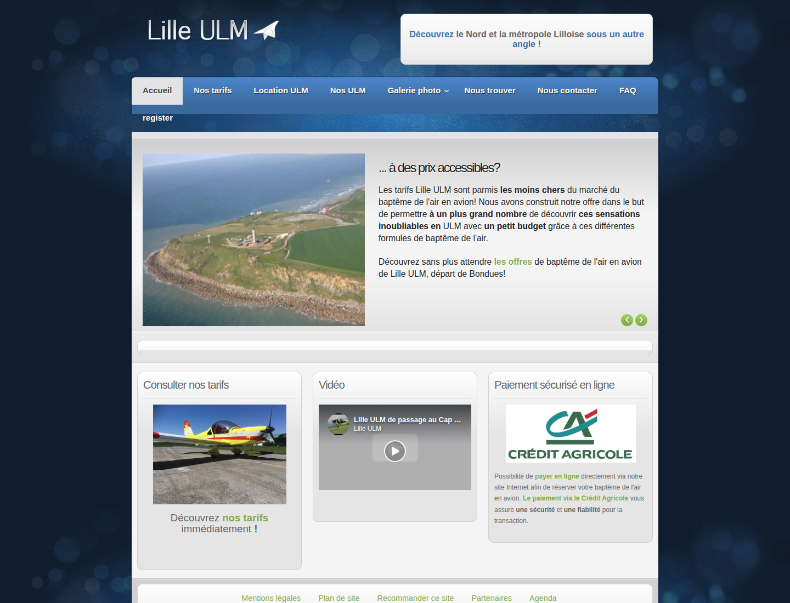
2. Acceder au back-office
Le back-office Joomla est accessible depuis /administrator/. En production, l'equivalent attendu sera https://www.bapteme-air-lille.fr/administrator/.
- Ouvrir l'adresse d'administration.
- Saisir l'identifiant et le mot de passe du gestionnaire.
- Cliquer sur le bouton de connexion.
Menus principaux visibles
Système, Utilisateurs, Menus, Contenu, Media, Composants, Extensions.
Composants utiles au gestionnaire
BreezingForms Pro, DT Register, JEvents, Phoca Gallery.
Reflexe de prudence
Travaillez de preference depuis les vues de liste. Certaines vues d'edition profondes restent instables sur cette base Joomla 3.
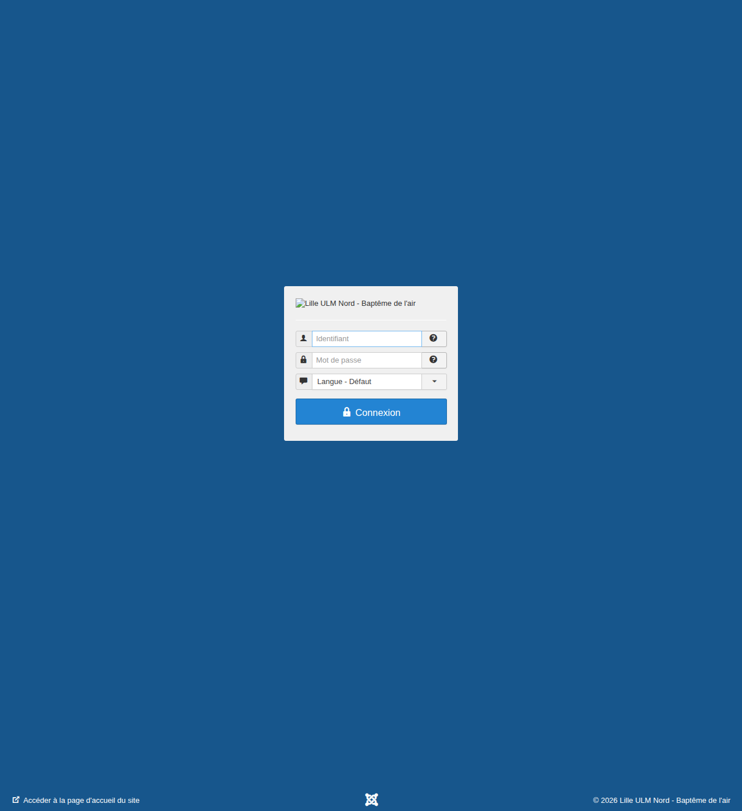
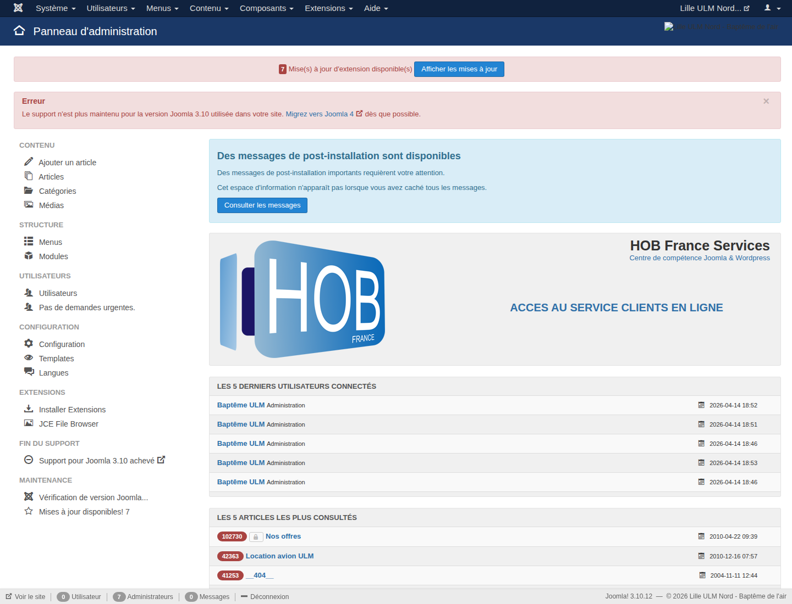
/administrator/. Si l'echec persiste, ne pas multiplier les essais inutilement : demander une verification des acces.
Chemins rapides utiles
| Besoin | Ou cliquer | Ce que vous devez voir |
|---|---|---|
| Lire les messages recus | Composants > BreezingForms Pro > Enregistrements | une liste de lignes avec dates et donnees de formulaires |
| Voir les ventes | Composants > DT Register > Enregistrements | la page Enregistrements |
| Changer un tarif | Composants > DT Register > Evenements | la liste des prestations |
| Retrouver une page de contenu | Contenu > Articles | la liste des articles du site |
| Retrouver un bloc d'accueil | Extensions > Modules | la liste des modules |
| Verifier la galerie | Composants > Phoca Gallery | le panneau du composant galerie |
3. Routines de gestion recommandees
Chaque jour ou apres une vente
- Verifier que l'accueil, la page contact et
/register.htmls'affichent correctement. - Consulter les ventes et reservations dans DT Register > Enregistrements.
- Consulter les messages recus dans BreezingForms Pro > Enregistrements.
Chaque semaine
- Parcourir les pages cle pour detecter un media casse ou un texte obsolete.
- Verifier les offres publiques DT Register et les tarifs affiches.
- Verifier que le bloc Video, la carte "Nous trouver" et la galerie restent bien rendus.
Apres un changement de tarif
- Noter le nom exact de la prestation modifiee.
- Enregistrer la modification dans DT Register.
- Revenir sur la page publique des offres pour verifier le nouveau prix.
- Faire une verification rapide du tunnel de reservation jusqu'a l'etape Paiement.
4. Contenus editoriaux et structure du site
Les contenus editoriaux observes dans le back-office sont portes par un petit nombre d'articles Joomla. Parmi les articles publies visibles : Nos offres, Location avion ULM, Nos ULM, FAQ, Mentions legales, Partenaires et deux pages de remerciement.
Pages publiques actuellement reperees
- Accueil
- Nos tarifs / Nos offres
- Location ULM
- Nos ULM
- Galerie photo
- Nous trouver
- Nous contacter
- FAQ
- Mentions legales
- Partenaires
- Plan de site
- Agenda
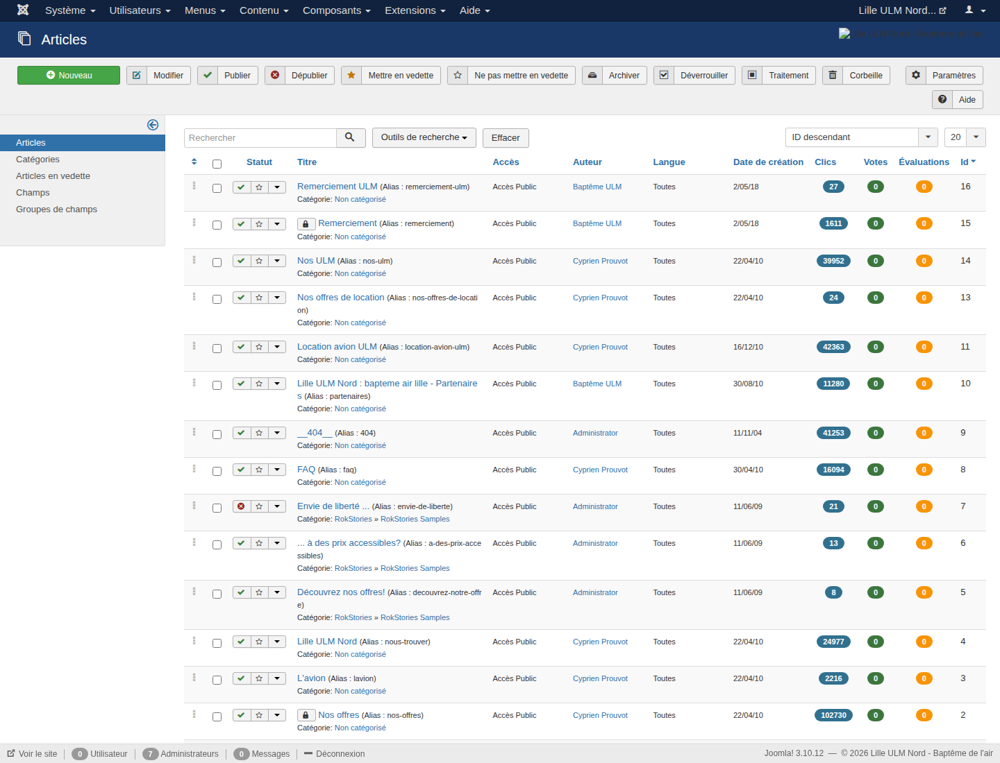
- Utiliser la liste pour retrouver la bonne page.
- Verifier d'abord le titre de la page a modifier.
- Si l'ouverture de la fiche echoue, noter le titre de l'article et faire intervenir un profil technique pour la modification.
5. Messages de contact avec BreezingForms
La page Nous contacter n'utilise pas le composant de contact Joomla natif mais un formulaire BreezingForms nomme contact.
Ce que fait le gestionnaire
- Verifie que la page contact charge bien et que les champs sont visibles.
- Consulte les enregistrements dans Composants > BreezingForms Pro > Enregistrements.
- Filtre si necessaire par date, IP, identifiant ou formulaire.
Formulaire repere
contact (1 page)
Volume observe
Le composant contient deja de nombreux enregistrements : il est utile d'utiliser les filtres pour retrouver rapidement un message.
Champ important
Le formulaire de contact est protege par un controle anti-spam. Si le formulaire n'est plus envoyable, il faut le faire verifier.
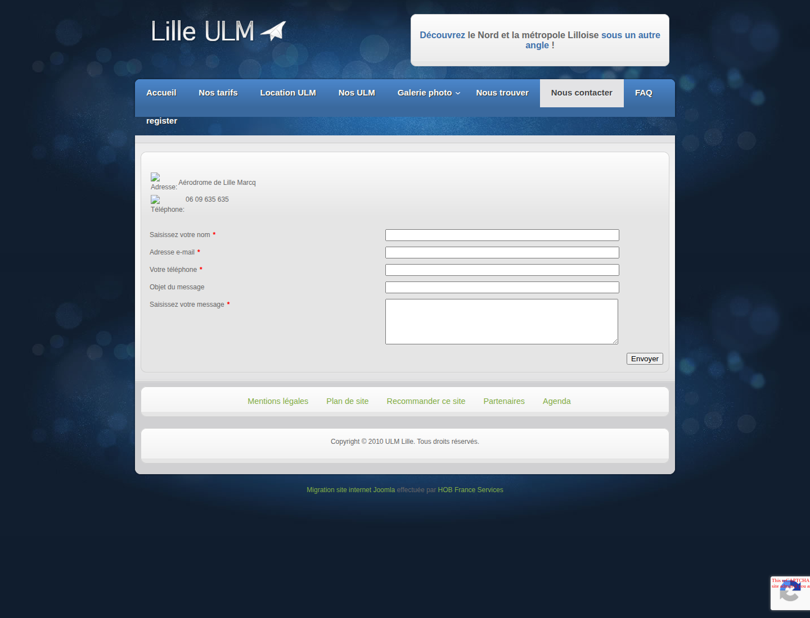
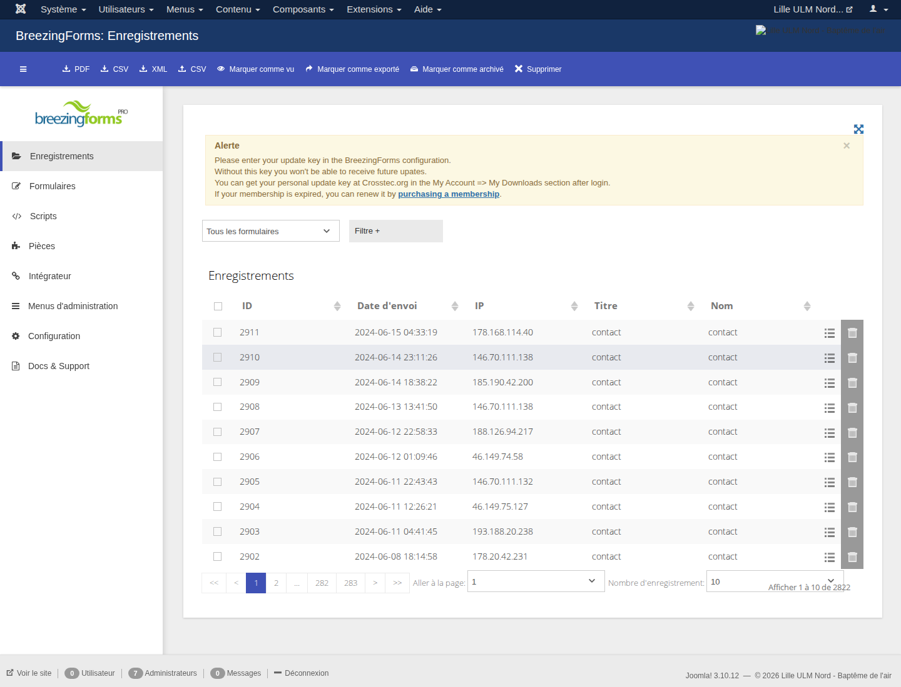
6. Reservations, ventes et tarifs DT Register
Le composant DT Register gere les offres commerciales, les reservations et le suivi des ventes. Pour le gestionnaire, c'est le point central des baptemes de l'air et prestations vendues sur le site.
Offres actuellement visibles sur le site
| Prestation | Tarif observe | Repere utile |
|---|---|---|
| Bapteme de l'air - seance de 15 min | 49,90 EUR | offre d'entree |
| Bapteme de l'air - seance de 30 min | 99,90 EUR | offre courte |
| Cours de pilotage - seance de 45 min | 145,00 EUR | cours |
| Bapteme de l'air - seance de 1 heure | 179,90 EUR | offre longue |
| Bapteme de l'air - seance de 1h30 | 249,90 EUR | offre premium |
| 6 lecons de pilotage de 40 mn | 590,00 EUR | forfait |
Verifier qu'une reservation fonctionne
- Ouvrir la page publique
/register.html. - Verifier que les offres sont bien listees.
- Ouvrir une offre et verifier que le formulaire client s'affiche.
- Verifier que le parcours affiche bien ses etapes principales : S'inscrire, Billing, Details puis Paiement.
- En cas de test complet, verifier que la reservation se termine sur la page
/remerciement.html.
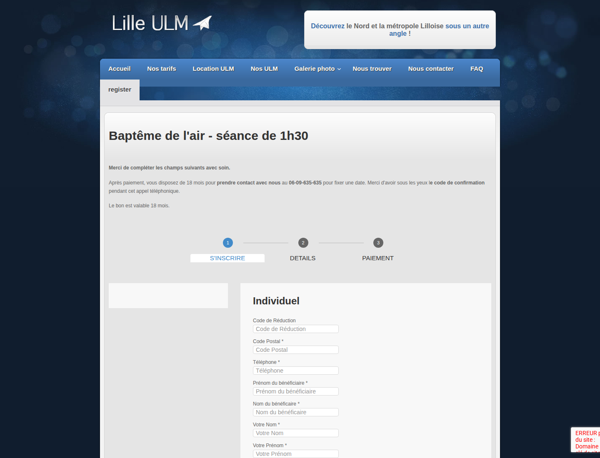
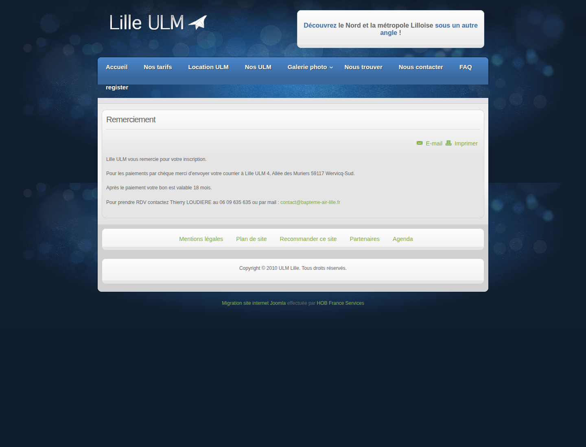
Suivre les ventes et les reservations
- Dans le back-office, ouvrir Composants > DT Register > Enregistrements.
- Filtrer si besoin par evenement, date ou statut.
- Pour chaque vente, reperer au minimum : la prestation achetee, la date d'enregistrement, le numero de confirmation et le mode de reglement.
- Les reglements les plus frequents sont Paypal et le reglement hors ligne Cheque ou virement.
- Si le reglement est de type Cheque ou virement, prevoir un suivi en dehors du site jusqu'a encaissement effectif.
- Utiliser Exportation CSV si vous devez transmettre la liste des reservations ou preparer un suivi comptable.
Ou voir les ventes
DT Register > Enregistrements
Ce qu'il faut noter
Prestation, date, numero de confirmation, mode de reglement, nom du client.
Quand agir
En priorite sur les reglements hors ligne, les demandes urgentes et les exports a transmettre.
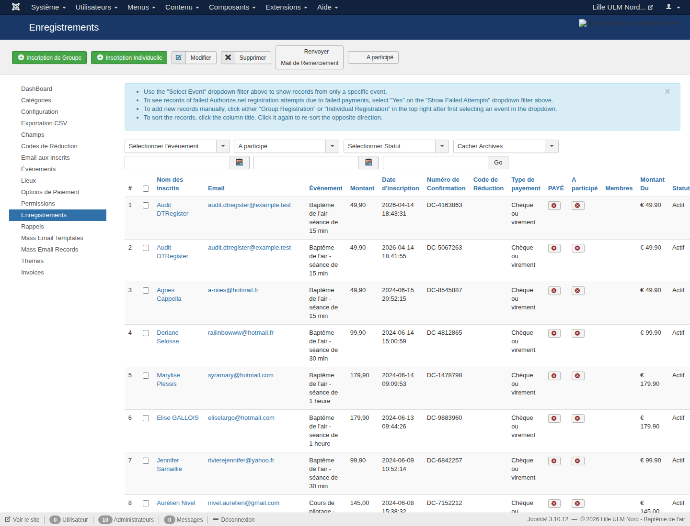
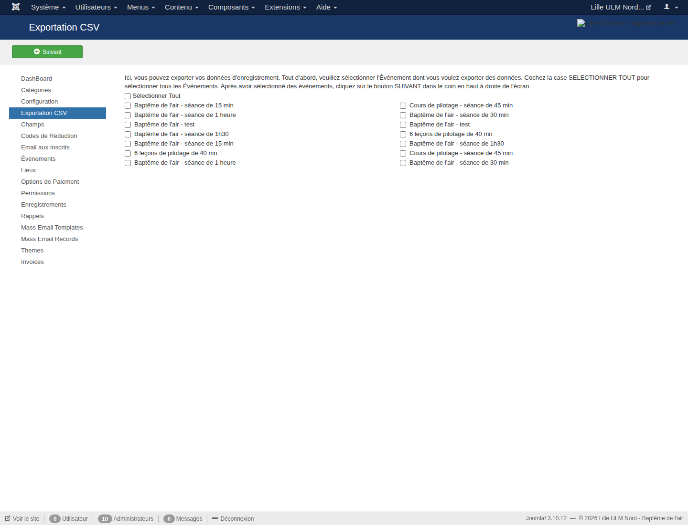
Changer un tarif
- Ouvrir Composants > DT Register > Evenements.
- Reperez la prestation a modifier.
- Ouvrir la fiche de la prestation, puis l'onglet Remises et Frais.
- Modifier le montant principal de la prestation.
- Enregistrer puis verifier le resultat sur la page publique des offres.
Pour une modification simple de prix, commencez toujours par la fiche de l'evenement. Les ecrans Options de Paiement et Frais de Facturation servent plutot a des regles complementaires qu'a une hausse ou baisse courante du tarif.
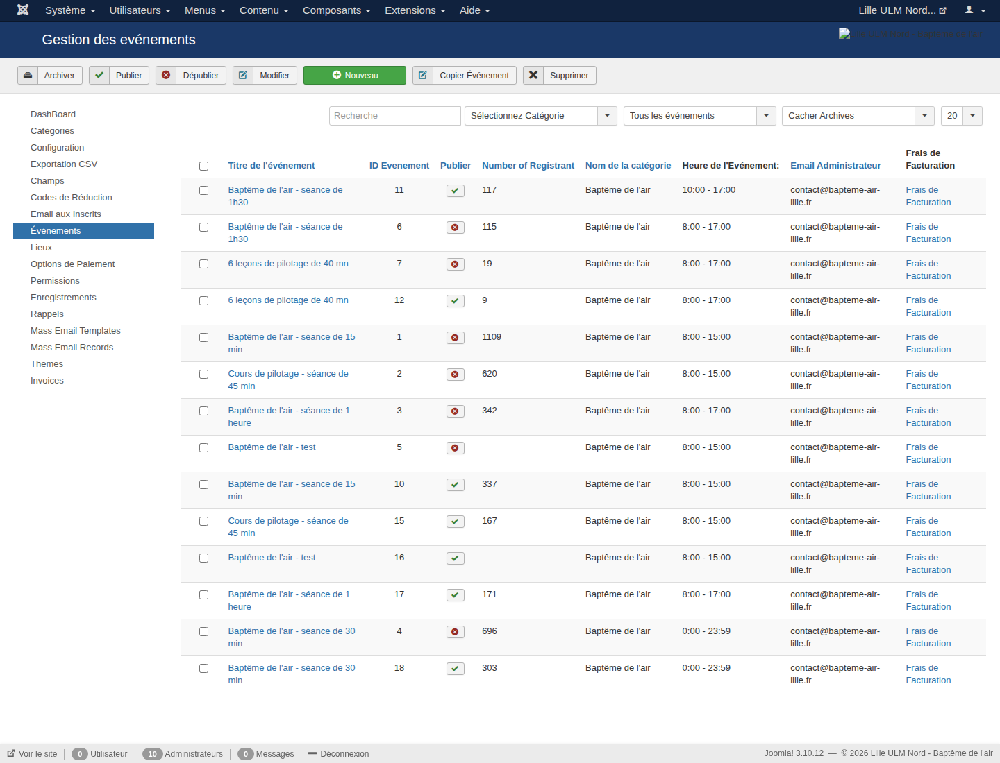
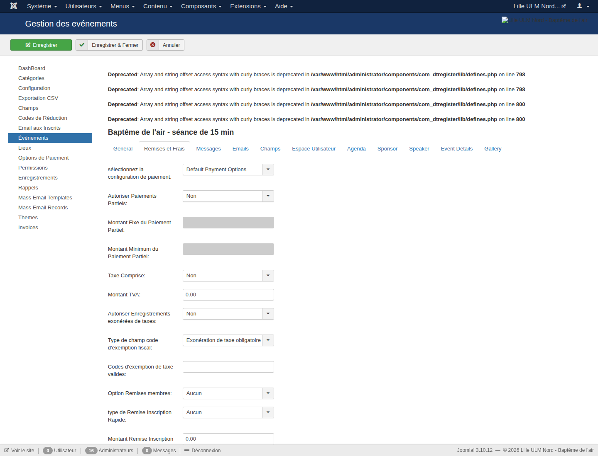
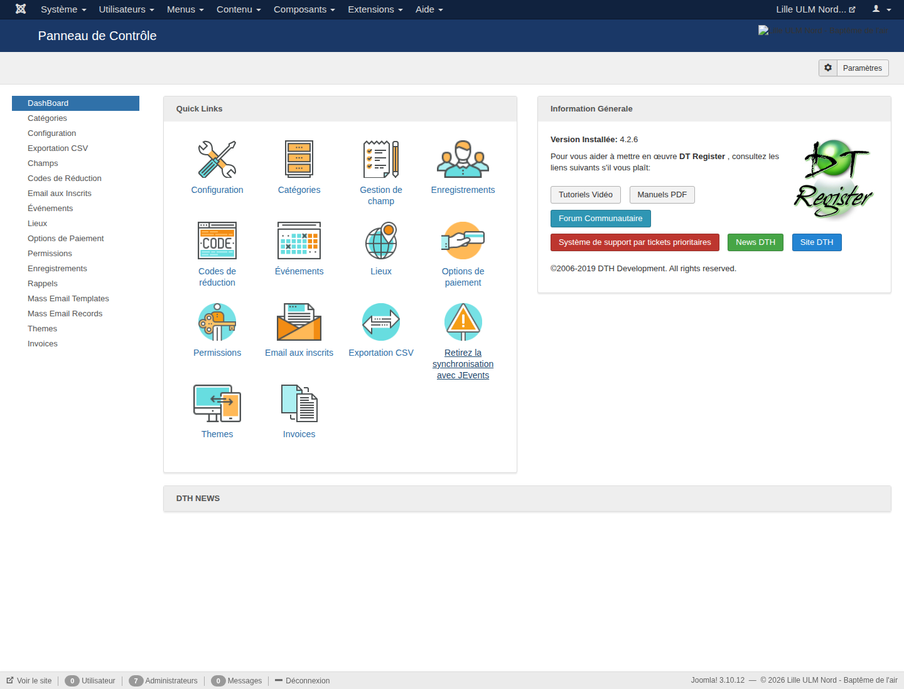
7. Galerie photo
La galerie publique repose sur Phoca Gallery. Quatre categories publiees ont ete reperees :
- Nos ULM
- Le pilote
- En direct du cockpit
- Bonus : un atterrissage comme si vous y etiez !
Le panneau d'administration du composant est accessible, ce qui permet au gestionnaire de confirmer la presence de la galerie et de retrouver ou intervenir si un album doit etre verifie.
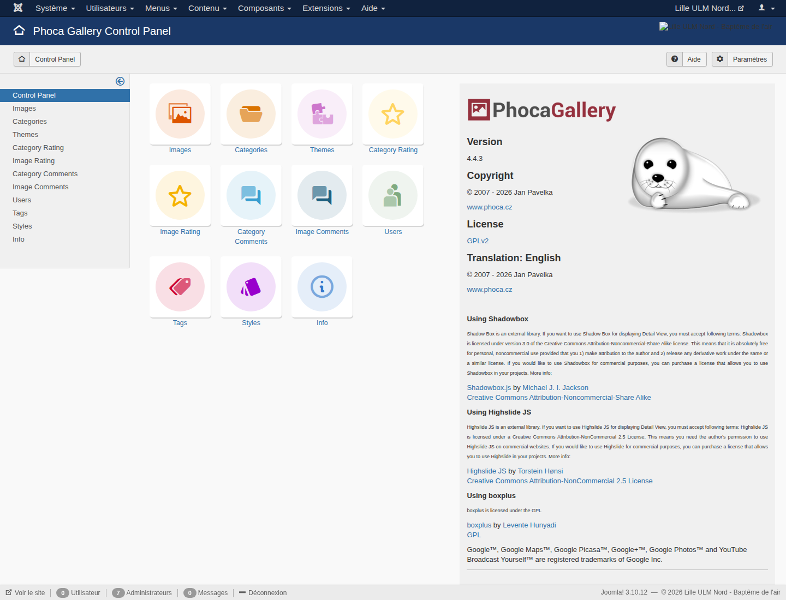
- Entrer d'abord dans le composant galerie.
- Retrouver ensuite la categorie ou l'image a verifier.
- Commencer par du controle visuel avant toute modification plus fine.
8. Agenda
L'agenda public est accessible depuis le menu. Il est gere par JEvents. Le composant ouvre maintenant un tableau de bord plus riche, avec compteurs et alertes de configuration.
- Le lien public
/agendarepond en front. - Le composant JEvents est present en administration.
- Le dashboard observe annonce
0 Future Events, ce qui signifie qu'un controle fonctionnel du calendrier est necessaire si l'agenda doit redevenir un vrai outil d'animation. - Le composant affiche aussi une alerte indiquant que les calendriers ne sont pas encore correctement configures.
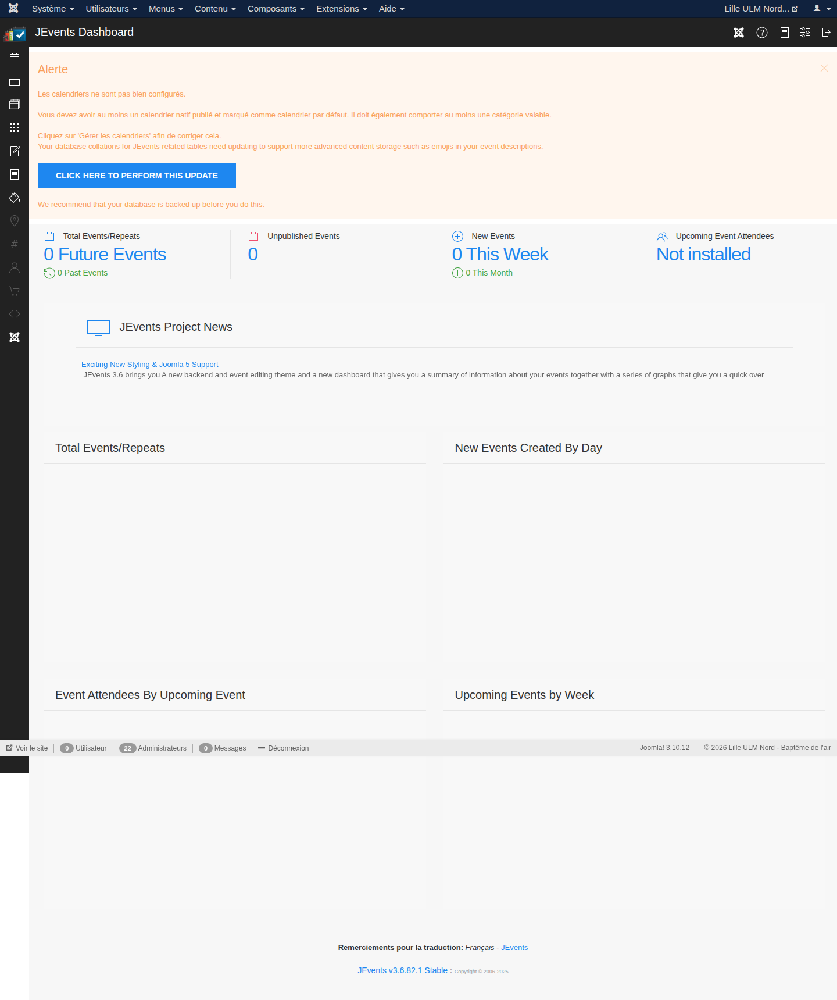
9. Modules de la page d'accueil et blocs transverses
Les modules publics publies les plus visibles pour le gestionnaire sont :
- Consulter nos tarifs
- Video
- Paiement securise en ligne
- Nous trouver (module wrapper / embed)
- Menu principal et Menu secondaire
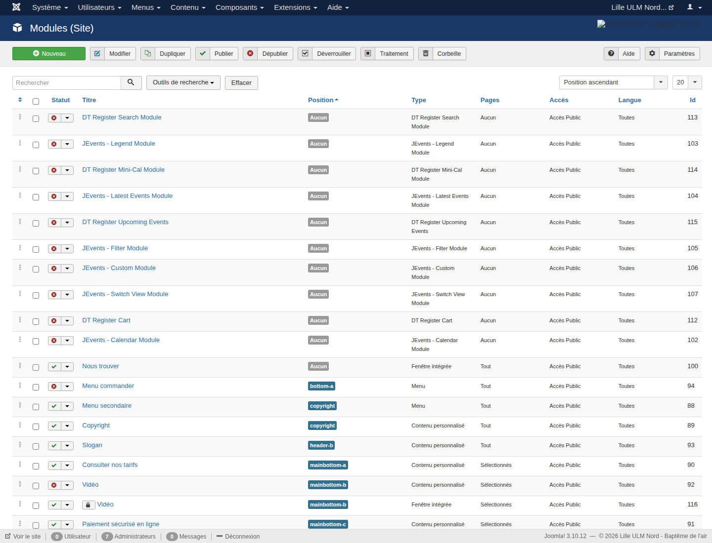
Le bloc Video repose aujourd'hui sur un wrapper avec un embed Facebook. Le bloc Nous trouver repose egalement sur un wrapper, probablement pour la carte embarquee.
- Utiliser cette liste pour retrouver le bloc d'accueil a controler.
- Verifier d'abord le nom du module avant toute action.
- Si l'ouverture de la fiche echoue, garder le nom exact du module pour demander une intervention technique.
10. Limites connues et points de vigilance
Edition admin profonde instable
L'edition d'article et de module peut encore echouer. En revanche, la fiche d'un menu et la fiche d'une prestation DT Register sont plus exploitables.
Offres DT Register
Les offres ont ete remises en service et doivent etre surveillees regulierement : affichage public, prix, page de fin et mode de reglement.
Pages vieillissantes
FAQ, Mentions legales, Partenaires et plusieurs ecrans annexes restent datés visuellement et editorialement.
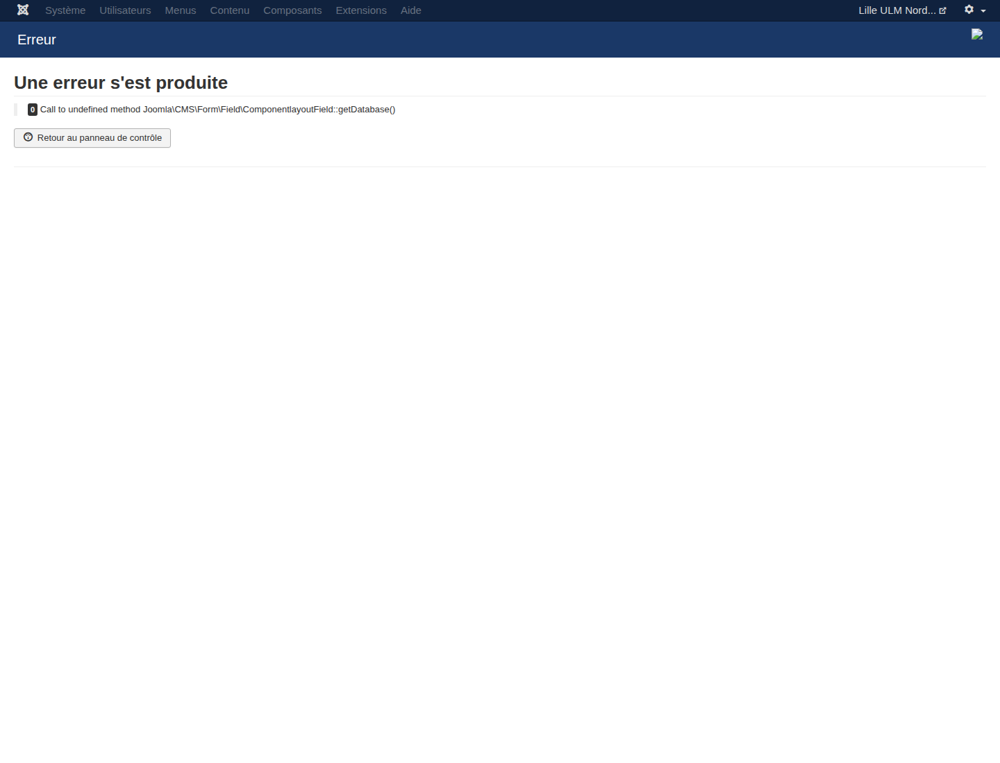